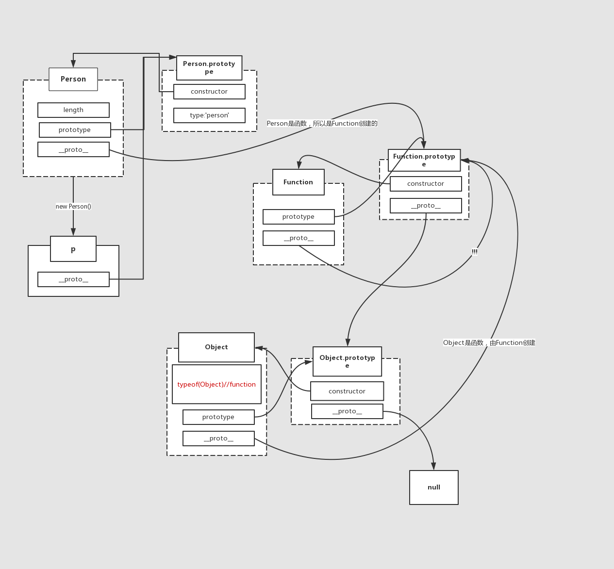

首先创建全局上下文环境
然后代码执行到最后一行之前，全局上下文环境中的变量被赋值
执行到最后一行，调用changColor,创建新的执行上下文环境，并压入栈，如图1中第二个所示。

然后执行到swapColor()调用swapColor。。。。再创建一个新的执行上下文环境并入栈，接下来执行完出栈。。。。
变量对象创建
function声明比var声明优先级高一点
this在执行上下文时确定指向，指向被赋予function所属的Object
关于this的取值，是在函数真正被调用执行的时候确定的，函数定义时确定不了。
函数在定义时（不是调用），就已经确定了函数体内部自由变量的作用域。
作用域在函数定义时就确定了，而不是在函数调用时确定。
什么是自由变量?
在A作用域中使用的变量x,却没有在A作用域中声明(即在其他作用域中声明的),对于A作用域来说,x就是一个自由变量。
看例子来理解：
function test(){ console.log(foo); console.log(bar); var foo='Hello'; console.log(foo); var bar=function(){ return 'world'; } function foo(){ return 2; } } test();
|
其实这段代码=>
function test(){ function foo(){ return 2; } var bar; console.log(foo); console.log(bar); var foo; foo='Hello' console.log(foo); bar=function(){ return 'world'; } }
|
var a={}; a.prototype var b=function(){}; console.log(b.prototype) var c="string"; console.log(c.prototype) * prototype是function定义时自带的属性 */ var Person=function(){} var p=new Person(); Person.prototype.type="person"; Person.prototype.constructor===Person p.__proto__==Person.prototype p.prototype p.__proto__.constructor===Person
|
